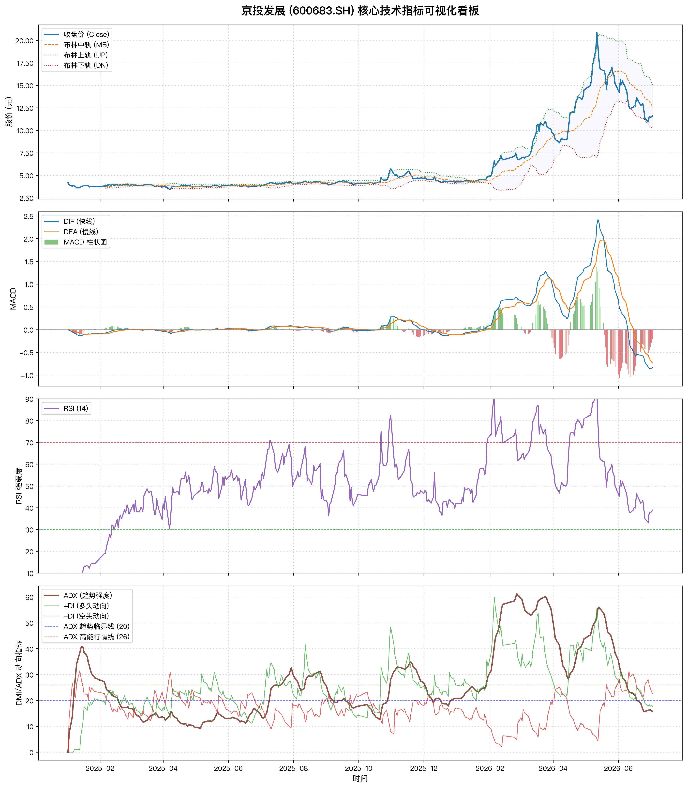

京投发展 (600683.SH) 历史行情数据与技术指标诊断
数据区间：2025年1月2日 至 2026年7月3日（共 362 个交易日）
一、 数据基础与质量诊断 (Data Quality & Missing Values)
本看板对储存在 600683_SH_daily.csv 中的历史行情数据进行了全面的质量诊断。数据涵盖了 362 个交易日 的日线级别行情，共包含 14 个特征字段。诊断结论一览：
二、 核心特征描述性统计量 (Descriptive Statistics)
针对该股在过去一年半内的交易表现，对其基础价格特征、涨跌变化及资金流量指标进行了算术均值、离散程度及极值统计。描述性统计指标如下表所示：
三、 深度量化诊断与统计学特征分析
1. 显著的右偏分布 (Positive Skewness)
股价均值（6.15元）远高于中位数（4.26元），表明该股票在统计周期内有超过 60% 的交易日处于 5 元以下的低价震荡区。随后的行情爆发迅速拉升至 20.85 元，导致算术均值受极值拉扯而大幅抬升，呈现长期筑底、短期爆发的右偏分布结构。
策略：在开发策略时，传统的均值回归或网格策略容易在高位面临巨大的趋势爆仓风险，应考虑配置自适应动态止损或趋势突破通道来过滤单边动能。
2. 极高波动性与封板倾向 (High Volatility)
股价日涨跌幅标准差高达 3.55%。在统计期内，单日最大跌幅达 -9.97%（逼近跌停），单日最大涨幅达 +10.10%（封涨停板）。这种极高波动代表股价在趋势启动时弹性极大，而在退潮时存在极强的踩踏风险。
策略：在策略执行端，必须引入硬滑点限制（Slippage Limit Protection）与封板撤单控制，防范挂单追高和流动性枯竭导致的无法及时止损风险。
3. 极度不均匀的流动性聚集 (Volume Clustering)
该股成交量的均值为 21.6 万手，中位数为 13.6 万手，而最大日成交量达到了惊人的 121.5 万手（为中位数的 8.9 倍）。说明该股属于典型的“情绪/资金驱动型”标的，在无行情时交投极清淡，一旦突破则伴随资金爆发式涌入。
策略：基于量价比值（Volume-Price Ratio）或 OBV 能量潮的突变信号，能够对趋势突破确立提供极高的过滤胜率。
四、 核心技术指标计算逻辑与作用
1 相对强弱指标 (RSI)
默认参数：N = 14RSI是衡量多空力量对比的经典动能指标。其通过计算14日内价格上涨和下跌幅度的指数平滑比例，将数值归一化在[0, 100]之间。在本报告中，采用更纯正的Wilder指数平滑移动平均。RSI > 70代表超买，RSI < 30代表超卖。其核心数学表达式为：
2 平滑异同移动平均线 (MACD)
默认参数：(12, 26, 9)MACD属于趋势跟踪型动能指标，通过对长短期均线的差值处理，消除了传统均线的滞后性。计算12日和26日EMA的差值作为离差快速线（DIF），再计算DIF的9日EMA作为慢速信号线（DEA）；两线之差的2倍即为红绿柱HIST。
3 布林带 (Bollinger Bands)
默认参数：(20, 2)布林带是一种根据价格标准差建立的动态价格信道。其以20日简单收盘均线为中轨（MB），均线正负2倍的20日滚动标准差作为上下限轨道（UP / DN）。在常态波动下，由于价格运行在通道内部的概率达95.44%，触轨常伴随着超买超卖的回吐反弹。
4 趋向指标 (DMI & ADX)
自适应核心参数：(14, 20, 26)针对本股高爆发、大波段横盘等特征，特引入DMI/ADX趋向指标。其通过真实波幅TR与正负趋向DM算取多空向导+DI和-DI，并计算综合趋势强度ADX。ADX < 20 为横盘无趋势弱能区，关闭趋势策略；ADX > 26 为高能趋势确立区，全线激活动量，顺势而为！
五、 技术指标可视化看板呈现效果与分析
4面板量化分析图（图 1）直观展示了各个技术指标的配合与变化：

图 1: 京投发展 (600683.SH) 核心技术指标与 DMI/ADX 趋势强度可视化看板看板细节量化解构：
- ● 第一面板 (价格与布林带)： 蓝色价格线在2025年底产生布林挤压（Squeeze），波动压缩至极限；随后价格强势上破并贴着布林上轨（UP）快速上摩擦行进，是主升浪启动的极佳信号。
- ● 第二面板 (MACD 动能差)： 在2026年春节前后，DIF与DEA发生零轴下金叉，并以大倾角冲破零轴关口，柱状直方图伴随大体量放量（绿柱增长），趋势能量确立；5月中旬两线出现高位死叉破位，动量竭尽。
- ● 第三面板 (RSI 强弱震荡器)： 14日RSI展现了2025年中的数个绝佳左侧抄底超卖位（RSI < 30），并记录了2026年爆拉阶段超买区域（RSI > 70）的严重价格钝化。
- ● 第四面板 (DMI/ADX 强震趋向)： 在2025年，深褐色ADX趋势强度线几乎全年在 20 以下无趋势弱震带运行，完美过滤磨损；2026年初 +DI（绿）金叉 -DI（红），且ADX上穿20、冲破26，趋势极速成型。
六、 附录：数据源双源校验核对结果 (Tushare vs Yahoo Finance)
为保障历史数据精度，我们编写脚本对 **Tushare 原始数据** 与全球权威金融数据库 **Yahoo Finance (600683.SS)** 进行高精度数值稽核。自动校验日志如下所示：